Gallery
Gallery
Every chart, newest first
Filter by language, chart type or year, or search for a topic. Each card opens the full analysis.
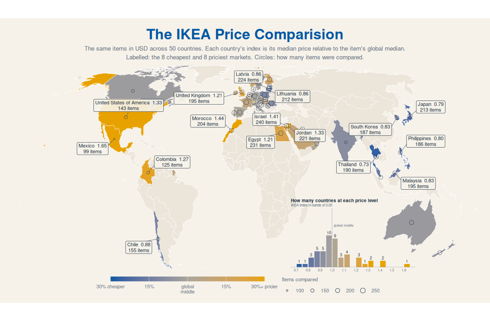
R
Week of 27 Oct 2026
IKEA Prices and Affordability
A cheaper IKEA price in one country doesn't mean IKEA is more affordable there.
mapsdot plot
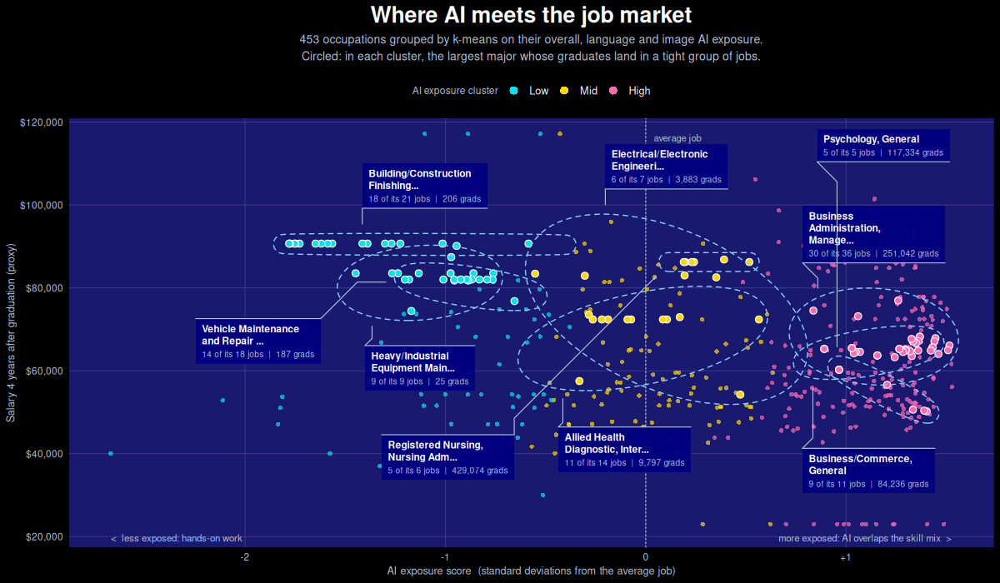
R
Week of 20 Oct 2026
College Majors and AI Exposure
The jobs least exposed to AI pay the most, yet only about 1 in 40 graduates heads toward them.
scatter plotclusteringtable
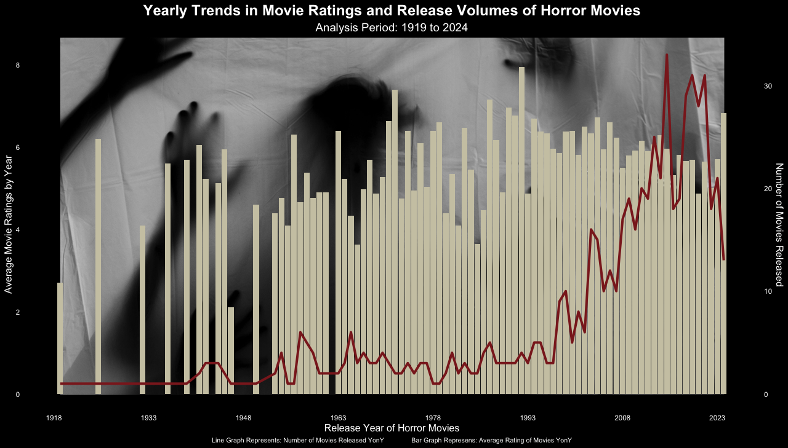
R
Week of 29 Oct 2024
Monster Movies
Horror films have boomed since 2000, and the good ones with them.
dual axisbar chart
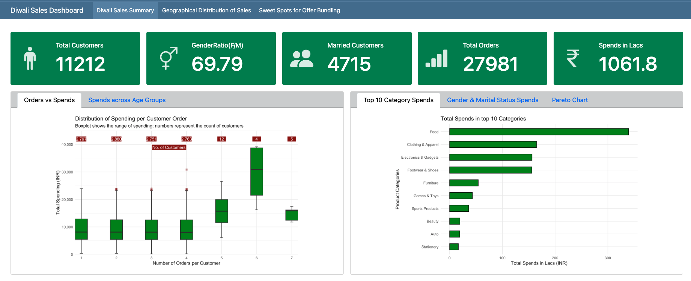
R
Week of 14 Nov 2023
Diwali Sales Dashboard
Who shopped for Diwali, what they bought and where, in one Quarto dashboard.
dashboardmaps
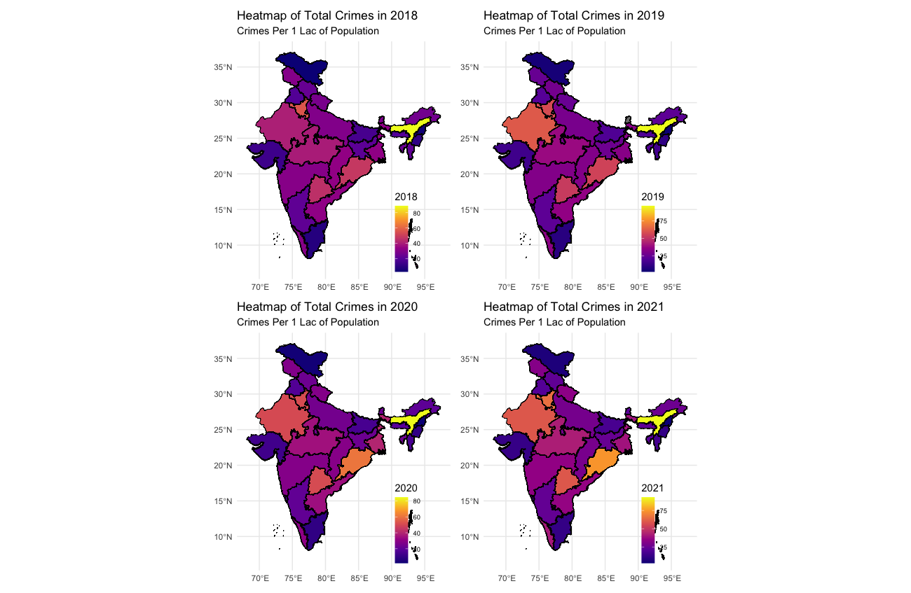
R
Bonus dataset
Crimes Against Women in India
District-level crime data mapped state by state, in absolute numbers and per lakh of population.
mapsbonus
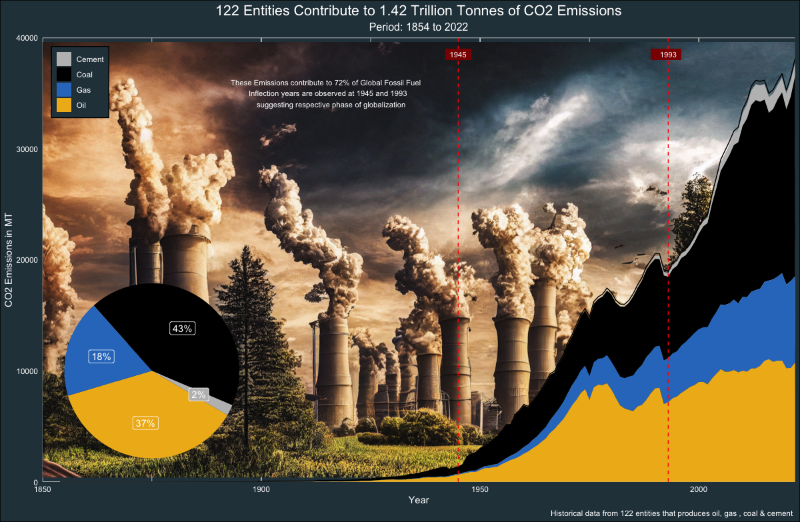
R
Week of 21 May 2024
Carbon Majors Emissions
1.42 trillion tonnes of CO₂ from the world's largest producers, by commodity and owner.
area chartcustom background
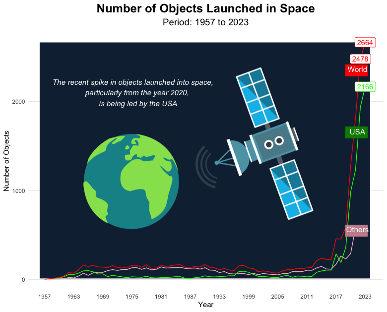
R
Week of 23 Apr 2024
Objects Launched into Space
65 years of launches, from a handful a year to thousands, as charts and a racing-bar movie.
animationline chart
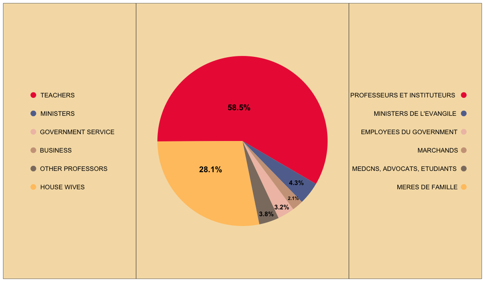
R
Week of 2 Apr 2024
Du Bois Challenge
Recreating plate 37 from W.E.B. Du Bois's 1900 data portraits in ggplot2.
recreationpie chart
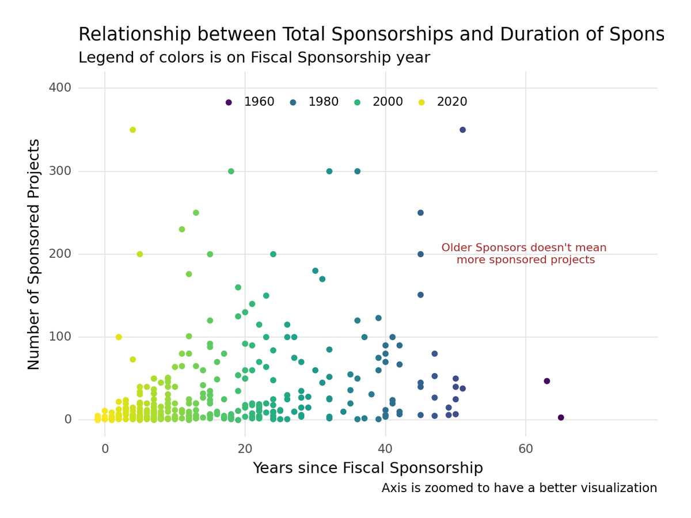
Python
Week of 12 Mar 2024
Fiscal Sponsors
Most fiscal sponsors run one or two projects and charge a 5–10% fee.
scatter plothistogram
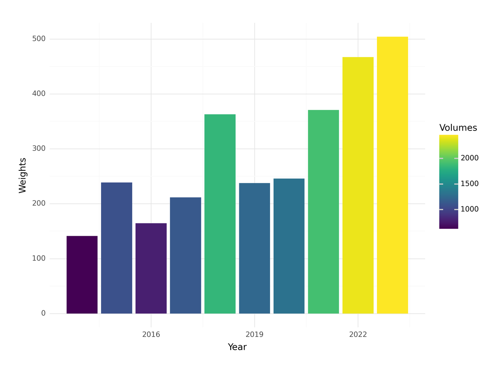
Python
Week of 5 Mar 2024
Trash Wheel Collection
Baltimore's trash wheels collect more every year, with a sharp rise after COVID.
line chartheat map
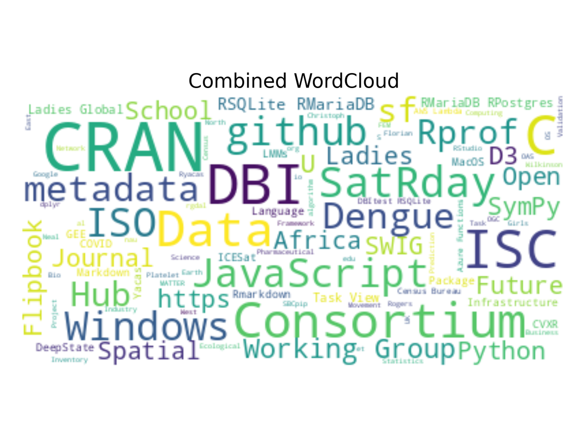
Python
Week of 20 Feb 2024
R Consortium ISC Grants
Clustering the R Consortium's grants by funding and topic, then reading each cluster through a word cloud.
clusteringword cloud
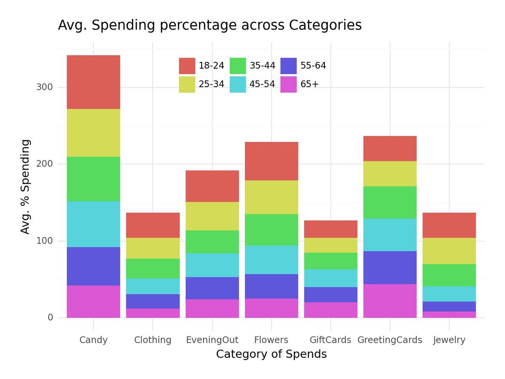
Python
Week of 13 Feb 2024
Valentine's Day Consumer Data
Valentine's spending has nearly doubled. Men buy flowers and jewellery; women buy cards.
column chartline chart
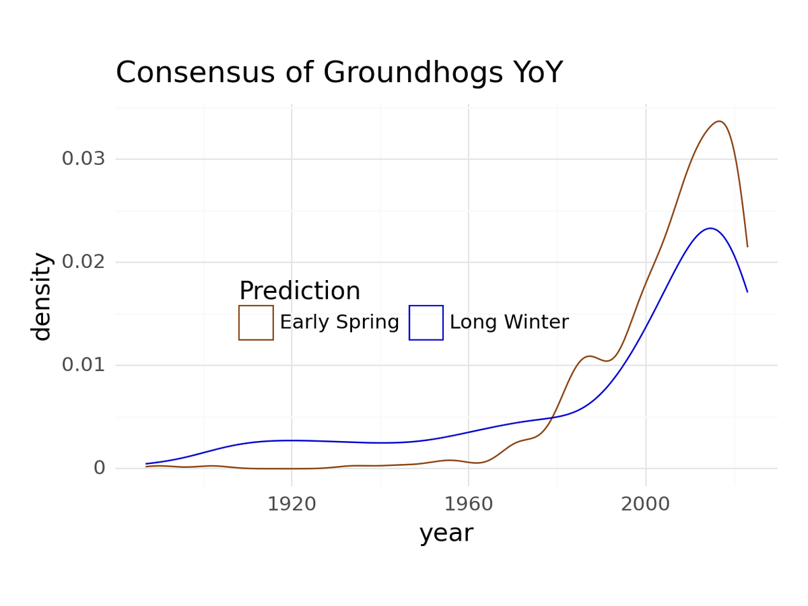
Python
Week of 30 Jan 2024
Groundhog Predictions
Most groundhogs call an early spring. Punxsutawney Phil usually doesn't.
density plotline chart
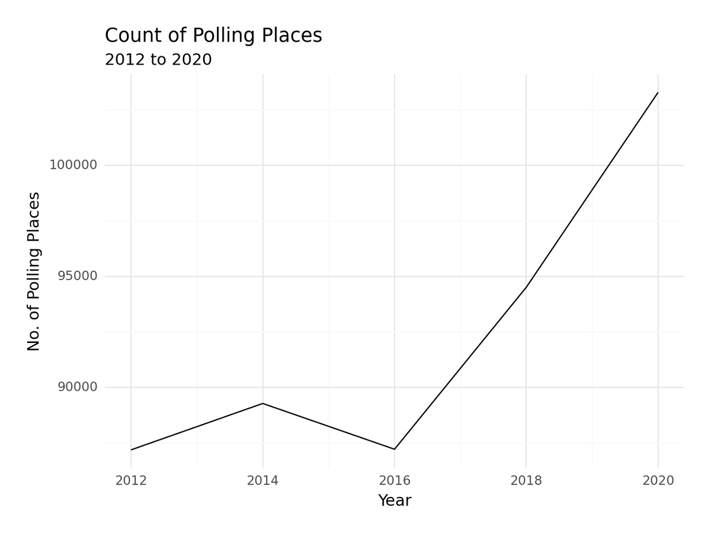
Python
Week of 16 Jan 2024
US Polling Places
How many polling places the US opened in each election year, 2012 to 2020.
line chart
No charts match. Try another filter or clear the search.
No matching items
All weeks at a glance
| Week | Analysis | Charts | Tool | Data |
|---|---|---|---|---|
| Bonus | Crimes Against Women in IndiaDistrict-level crime data mapped state by state, in absolute numbers and per lakh of population. | Bar chart, choropleth maps, correlation | R | |
| 27 Oct 2026 | IKEA Prices and AffordabilityA cheaper IKEA price in one country doesn't mean IKEA is more affordable there. | Choropleth maps with inset histograms, dot plot | R | readme ↗ |
| 20 Oct 2026 | College Majors and AI ExposureThe jobs least exposed to AI pay the most, yet only about 1 in 40 graduates heads toward them. | Annotated scatter, k-means clusters, gt table | R | readme ↗ |
| 29 Oct 2024 | Monster MoviesHorror films have boomed since 2000, and the good ones with them. | Dual-axis line, bar charts | R | readme ↗ |
| 21 May 2024 | Carbon Majors Emissions1.42 trillion tonnes of CO₂ from the world's largest producers, by commodity and owner. | Stacked area, inset pie | R | readme ↗ |
| 23 Apr 2024 | Objects Launched into Space65 years of launches, from a handful a year to thousands, as charts and a racing-bar movie. | Line charts, racing bar animation | R | readme ↗ |
| 2 Apr 2024 | Du Bois ChallengeRecreating plate 37 from W.E.B. Du Bois's 1900 data portraits in ggplot2. | Annotated pie chart | R | readme ↗ |
| 12 Mar 2024 | Fiscal SponsorsMost fiscal sponsors run one or two projects and charge a 5–10% fee. | Scatter, annotated histograms | Python | readme ↗ |
| 5 Mar 2024 | Trash Wheel CollectionBaltimore's trash wheels collect more every year, with a sharp rise after COVID. | Line charts, heat map | Python | readme ↗ |
| 20 Feb 2024 | R Consortium ISC GrantsClustering the R Consortium's grants by funding and topic, then reading each cluster through a word cloud. | Segment, scatter, word clouds | Python | readme ↗ |
| 13 Feb 2024 | Valentine's Day Consumer DataValentine's spending has nearly doubled. Men buy flowers and jewellery; women buy cards. | Line and column charts | Python | readme ↗ |
| 30 Jan 2024 | Groundhog PredictionsMost groundhogs call an early spring. Punxsutawney Phil usually doesn't. | Density, line and bar charts | Python | readme ↗ |
| 16 Jan 2024 | US Polling PlacesHow many polling places the US opened in each election year, 2012 to 2020. | Line chart | Python | readme ↗ |
| 14 Nov 2023 | Diwali Sales DashboardWho shopped for Diwali, what they bought and where, in one Quarto dashboard. | Value boxes, box plots, maps, animation | R | readme ↗ |
No matching items